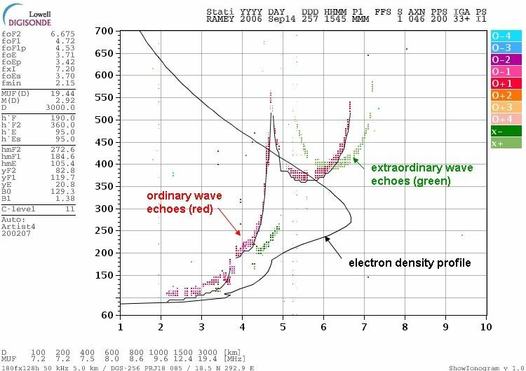

Цогтбаатарын Энхтуяа
МУИС-ийн багш | AI & Гүн сургалтын судлаач | "Magic Code AI"-г үүсгэн байгуулагч
Академик намтар ба Сургуулийн мэдээлэл
Цогтбаатарын Энхтуяа нь Монгол Улсын Их Сургуулийн (МУИС) Мэдээлэл, компьютерын ухааны тэнхимд 2018 оны 3-р сараас хойш тасралтгүй багшилж байгаа ба Компьютерын шинжлэх ухааны магистр зэрэгтэй.
Тэрээр Тайванийн Үндэсний Төв Их Сургуулийн (National Central University - NCU) Компьютерын шинжлэх ухаан, мэдээллийн инженерчлэлийн тэнхимд докторын (PhD) зэрэг горилж буй судлаач юм.
Түүний эрдэм шинжилгээний үндсэн чиглэл нь сансрын цаг уур, дэлхийн цахилгаан мандал (ионосфер)-ын радарын радио дохиог хиймэл оюун ухаан, гүн сургалтын (Deep Learning) алгоритмоор автоматаар боловсруулах, таних, ангилахад чиглэгддэг.
National Central University
(Тайвань)
Сансрын цаг уур ба Ионограмм боловсруулалт
Ионосфер (Ionosphere) ба түүний ач холбогдол: Дэлхийн агаар мандлын дээд давхарга дахь ионжсон хийн бүс нь радио долгионы ойлт, хиймэл дагуулын холбоо, навигацийн систем (GPS)-ийн нарийвчлалд шууд нөлөөлдөг чухал стратеги бүс юм. Энэ давхаргын төлөв байдлыг газрын гадаргуу дээрх ионозонд (Ionosonde) радараар радио долгион цацаж, ойж ирсэн дохиогоор хоёр хэмжээст "Ионограмм" (Ionogram) зураг үүсгэн шинжилдэг.

Зураг 1: Ионосферийг радио долгионоор (Radio Wave Reflection) тандан хэмжих физик зарчим болон давтамжаас хамаарсан виртуал өндрийн ойлтын муруй.

Зураг 2: Бодит Ионограмм (Digisonde Ionogram): Энгийн долгион (Ordinary wave, улаан), онцгой долгион (Extraordinary wave, ногоон) болон электрон нягтын профиль (Electron density profile).
Тайванийн Хуалиен (Hualien) орчмын VIPIR радараас цуглуулсан ионограмм зураг нь байгалийн болон төхөөрөмжийн өндөр шуугиантай буюу дохио-шуугианы харьцаа (SNR) нь дунджаар ердөө 1.4 байсан (бусад орны ижил өгөгдлийн SNR дунджаар 2.09 байдаг). Ийм хэт шуугиантай орчноос хэрэгцээт дохиог уламжлалт аргаар салгах боломжгүй байсан бөгөөд судалгааны баг нийт 6,131 ширхэг ионограмм зургийг LabelMe программ ашиглан гараар нэг бүрчлэн тэмдэглэж (ground truth), сургалтын том датасет үүсгэсэн байна.
Хөгжүүлсэн хиймэл оюуны загваруудын харьцуулалт
Ионосферийн радио дохионы 11 өөр давхарга, төрлийг (F2o, F2x, Eo, Ex, Eso, Esx гэх мэт) ялган таних, критик давтамжуудыг автоматаар тооцоолоход дараах гүн сургалтын архитектуруудыг хөгжүүлэн харьцуулсан байна:
| Загвар (Model) | Архитектурын бүтэц ба онцлог | Гүйцэтгэл ба Үр дүн |
|---|---|---|
| Spatial Attention U-Net (SA-UNet) | U-Net бүтцэд Орон зайн анхаарлын модуль (Spatial Attention Module) нэмж сайжруулсан сүлжээ. | Хамгийн өндөр нарийвчлалтай. F2o, F2x дохиог IoU > 0.7 түвшинд салгасан. Критик давтамжийн зөрүүг 0.63 MHz (±0.18 MHz) автоматаар тооцоолсон. |
| FC-DenseNet24 | FCN болон DenseNet-ийг нэгтгэж, Kaggle дээр ажиллахад зориулан параметрийн тоог 9.4 саяас 690,886 хүртэл цөөлж хөнгөвчилсөн. | SNR < 1.4 буюу хэт өндөр шуугиантай нөхцөлд ч алдаагүй, маш тогтвортой ажилласан. |
| U-Shaped Encoder-Decoder (2025–2026) | Хос сувгийн фазын зөрүүний статистик аргачлалыг гүн сургалттай хослуулсан шинэ үеийн сүлжээ. | O-wave болон X-wave дохиог салгах нарийвчлал 98.64%, Mean IoU 91.97% хүрсэн. |
| Mask R-CNN | Объектын байршлыг тогтоож, хэлбэрийг масклан сегментчилдэг Region-based CNN бүтэц. | Датасетэд 15%-иас бага тохиолдох ховор дохионуудыг ч таньж илрүүлсэн (IoU > 0.2). |
| Deep Watershed Transform (DWT) | Хоорондоо хэт ойрхон эсвэл давхацсан дохионуудыг салгах компьютер харааны гүн хуваалт. | Давхацсан ионосферийн радио долгионуудыг найдвартай ялгасан. |
Олон улсын эрдэм шинжилгээний түншлэл & Бүтээлүүд
Ц.Энхтуяа нь олон улсын нэр хүндтэй эрдэмтэд, түүний дотор Тайванийн Foxconn группын эрдэм шинжилгээний байгууллага болох Hon Hai Research Institute-ийн Хиймэл оюун ухааны судалгааны төвийн үүсгэн байгуулагч, захирал Др. Yung-Hui Li, Тайванийн NCU-ийн Guan-Han Huang, Chia-Hsien Lin, ОХУ-ын Москвагийн Их Сургуулийн Скобельцыны Цөмийн физикийн хүрээлэнгийн судлаач Alexei V. Dmitriev нартай хамтран ажиллаж байна.
VIPIR радарын 6,131 ионограмм дээр гүн сургалтын DenseNet24 загварыг ашиглан ионосферийн радио дохиог сэргээсэн үр дүнг хэвлүүлсэн.
Ионосферийн дохиог ялган таних 5 төрлийн конволюцын мэдрэлийн сүлжээний (SA-UNet, DenseNet, DWT, Mask R-CNN, DeepLab) чадавхыг цогцоор нь харьцуулан үнэлсэн.
Сансрын цаг уур судлалд машин сургалт, орон зайн анхаарлын модуль бүхий U-Net загварыг нэвтрүүлсэн судалгааны постер хэлэлцүүлэг.
Нээлттэй эх сурвалж ба Холбогдох хуудсууд
Судалгааны ажлуудыг дэлхийн бусад эрдэмтэд, судлаачдад нээлттэй болгох зорилгоор боловсруулсан хөнгөвчилсөн загвар, өгөгдлийг Kaggle болон нээлттэй репозиторид байршуулсан байдаг.